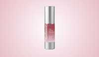

Skincare Protocol Scam or Legit? The Shocking Truth Exposed (2026 Review)

Click Here to Check Official Batch Availability →| Product Name: | Skincare Protocol |
| Editorial Score: | 4.8 / 5.0 ⭐⭐⭐⭐⭐ |
| Primary Purpose: | Targeted Bioactive Health & Vitality Formula (Natural Health & Dietary Supplement) |
| Manufacturing / Delivery: | c-GMP Certified, FDA-Registered Facility (USA) |
| Guarantee Shield: | 100% Risk-Free Money-Back Guarantee |
| Official Portal: | Verified Direct Manufacturer Website → |
Radiance Skincare UK Reviews 2026 | Is It Worth Or Scam?
Radiance Skincare is a premium anti-aging cream that deeply hydrates, smooths fine lines, and supports brighter, firmer, youthful-looking skin daily.
Radiance Skincare | Quick Overview | |
Product Name | Radiance Skincare |
Formula Type | Anti-aging skincare cream with hydration, skin-repair & radiance support |
Purpose | Supports smoother-looking skin, deep hydration, improved glow, and reduced visible signs of aging |
Key Benefits |
|
Usage | Apply 1–2 pumps to clean, dry skin morning and evening, gently massaging into face and neck |
Side Effects | No major side effects reported when used as directed |
Price |
|
Money-Back Guarantee | 30-day money-back guarantee |
Availability | Available mainly through the official online website |
Official Website | |
What Is Radiance Skincare?
Radiance Skincare is a modern anti-aging cream formulated to help improve the appearance of fine lines, dryness, dullness, and uneven-looking skin.
It is formulated to support smoother, softer, and more radiant skin through daily topical care. The formula focuses on hydration, skin comfort, and visible rejuvenation without invasive treatments.
This skincare solution is ideal for adults who want to maintain youthful-looking skin and improve overall skin texture.
It may especially appeal to customers experiencing early signs of aging, tired-looking skin, or dryness caused by stress, pollution, busy lifestyles, or natural age-related skin changes.
Both men and women can include it in their daily skincare routine. Radiance Skincare aims to support a fresher and more confident appearance by helping the skin look firmer, more hydrated, and visibly relaxed.
The Science Behind the Radiance Skincare
Radiance Skincare works by supporting the skin’s natural moisture balance and helping lessen the visible appearance of tension lines and wrinkles.
Its advanced cosmetic technology is formulated to help the skin appear smoother and more relaxed over time, creating a softer and more youthful-looking complexion.
The formula supports skin hydration at multiple levels, helping the skin retain moisture for a plumper and healthier appearance. Proper hydration may help improve skin texture, lessen roughness, and minimize the look of dryness that can make fine lines appear more noticeable.
Radiance Skincare also focuses on supporting the skin barrier, which plays an important role in defending the skin against environmental stressors such as pollution, dryness, and harsh weather conditions.
A healthy skin barrier can help the skin maintain comfort, resilience, and a naturally radiant appearance. In addition, the cream may help improve the overall tone and brightness of the skin through regular use.
By supporting smoother-looking skin and enhancing visible radiance, the formula helps promote a refreshed appearance that fits easily into everyday skincare routines.
Radiance Skincare Ingredients
Radiance Skincare combines advanced cosmetic compounds with deeply hydrating and skin-conditioning elements to support smoother, healthier-looking skin.
Each ingredient is carefully selected to help improve skin texture, hydration, comfort, and visible radiance.
1. Glycerin
Glycerin is a high-potency moisture-attracting agent that helps draw hydration into the skin and maintain softness throughout the day. It supports smoother-looking skin by reducing dryness and improving overall skin comfort.
2. Niacinamide
Niacinamide is widely used in skincare for its ability to support a brighter and more balanced complexion. It may help lessen the appearance of uneven skin tone and improve the visible smoothness of the skin.
3. Dipeptide Diaminobutyroyl Benzylamide Diacetate
This advanced peptide is known for its cosmetic “relaxing” effect on the skin’s appearance. It is commonly used in anti-aging formulas to help soften the visible appearance of expression lines and wrinkles.
4. Zinc Oxide
Zinc Oxide is valued for its soothing and protective properties in skincare formulations. It helps calm the skin while supporting protection against environmental irritants that may contribute to visible stress on the skin.
5. Tocopheryl Acetate (Vitamin E)
Vitamin E is a well-known antioxidant that helps shield the skin from environmental damage caused by free radicals. It supports healthier-looking skin while promoting softness and smooth texture.
6. Sodium Hyaluronate
Sodium Hyaluronate is a deeply hydrating compound that helps the skin retain moisture for a plumper and smoother appearance. It supports skin elasticity and mitigates the visible effects of dryness.
7. Guar Gum
Guar Gum acts as a stabilizing and texture-enhancing component within the formula. It helps create a smooth application while improving the consistency and comfort of the cream on the skin.
Benefits
Radiance Skincare is formulated to support smoother, brighter, and healthier-looking skin through daily hydration and advanced cosmetic care. Its formula focuses on visible skin rejuvenation while helping maintain comfort and moisture balance.
- Supports Smoother-Looking Skin – Radiance Skincare may help soften the appearance of fine lines and expression marks for a more refined complexion. Regular use can support visibly smoother and softer skin texture.
- Deep Hydration Support – The formula helps maintain long-lasting moisture levels to reduce dryness and rough-looking skin. Well-hydrated skin often appears plumper, healthier, and more refreshed.
- Promotes a Radiant Glow – Radiance Skincare may help improve dull-looking skin and support a brighter complexion. Consistent use can enhance the skin’s natural glow and overall vibrancy.
- Helps Protect the Skin Barrier – This cream supports the skin’s natural protective barrier against environmental stressors. A stronger barrier can help maintain smoother, calmer, and healthier-looking skin.
- Supports Youthful Appearance – The advanced anti-aging formula helps improve the visible firmness and comfort of the skin. It may contribute to a fresher, more youthful-looking appearance over time.
Pros
- Advanced anti-aging skincare formula
- Helps improve skin hydration
- Supports smoother-looking skin
- Lightweight and easy to apply
- Suitable for daily skincare routines
- Helps promote radiant skin appearance
- Includes antioxidant skin support
- Non-invasive cosmetic solution
- Designed for both men and women
- Supports softer and healthier-looking skin
Cons
- Results may vary between individuals
- Requires consistent daily use
- Not intended to treat medical skin conditions
How To Use?
Apply Radiance every morning and evening to clean, dry skin for the best results. Dispense 1–2 pumps onto your fingertips and gently massage into the face and neck using smooth upward motions until fully absorbed.
Make sure your skin is freshly cleansed and completely dry before application to help the formula absorb effectively and support maximum hydration and skin-smoothing benefits.
For optimal results, consistent long-term use is recommended as part of your daily skincare routine to maintain smoother, brighter, and more youthful-looking skin.
Are There Any Side Effects?
No side effects have been reported by most users when Radiance Skincare is used as directed. The formula is formulated to be gentle for daily skincare routines and suitable for customers looking for a non-invasive cosmetic solution.
Because every skin type is different, some customers with highly sensitive skin may wish to perform a small patch test before full application.
Using the product consistently according to the instructions may help support the best overall experience and visible skincare results.
Is Radiance Skincare a Scam or Legit?
Yes, Radiance Skincare appears to be a legitimate skincare product formulated to support smoother, hydrated, and more radiant-looking skin through cosmetic skincare technology.
The formula includes widely used skincare compounds commonly found in modern beauty products focused on hydration and anti-aging support.
It is intended for daily use and promotes non-invasive skincare benefits without harsh procedures. When used consistently as directed, it may help improve the overall appearance and texture of the skin.
No, Radiance Skincare is not considered a scambased on the product information provided.
Radiance Skincare UK Customer Reviews & Complaints
Most of Radiance Skincare Customer reviews have been majorly positive, with an average rating of ⭐⭐⭐⭐⭐ 4.92/5 from 2000+ reviews.
⭐Positive Reviews
Radiance Skincare has received many positive comments from users who appreciate its hydrating feel, smooth texture, and visible skin-enhancing effects. Customers also frequently mention the lightweight formula, glowing finish, and comfortable daily use experience.
Sarah M. – London, UK ⭐⭐⭐⭐⭐
“I’ve been using Radiance Skincare for about six weeks and my skin feels softer, smoother, and much more hydrated. My makeup also sits beautifully now, and I love the healthy glow it gives my face.”
Emma R. – Manchester, UK ⭐⭐⭐⭐⭐
“This cream feels luxurious on the skin without being greasy. I noticed my skin looking brighter and more refreshed within a few weeks of regular use. Definitely part of my skincare routine now.”
Olivia T. – Birmingham, UK ⭐⭐⭐⭐⭐
“I was looking for a gentle anti-aging cream and Radiance exceeded my expectations. My skin looks more even, hydrated, and relaxed. I also appreciate how easy it is to apply morning and night.”
⚠️Common Complaints
While many users report positive experiences, a few customers mention concerns related to the premium pricing and limited availability through online platforms only. Some users also noted that visible results may require consistent long-term use.
Chloe W. – Leeds, UK ⭐⭐⭐
“The product feels very nice on the skin, but I personally think the price is slightly high for a skincare cream. I wish there were more bundle offers or discounts available.”
Common Complaint: Higher pricing compared to standard skincare creams.
Jessica P. – Glasgow, UK ⭐⭐⭐
“I wanted to purchase Radiance in-store, but it seems to be available mainly online. Shipping was fine, but I prefer buying skincare products directly from physical stores.”
Common Complaint: Limited availability and mostly sold online only.
Is It Worth Trying?
Yes, Radiance Skincare is worth trying for customers looking to support smoother, brighter, and more hydrated skin without invasive cosmetic procedures.
The formula is formulated to fit easily into a daily skincare routine while helping improve the visible appearance of fine lines, dryness, and dull-looking skin.
Radiance Skincare may especially appeal to people seeking a lightweight cream that supports youthful-looking skin and long-term skincare maintenance.
Money Back Guarantee
Radiance Skincare is backed by a 30-day money-back guarantee, giving customers added confidence when trying the product for the first time.
If you are not fully satisfied with your purchase, you may request a refund within the stated return period according to the company’s policy.
This customer-friendly guarantee allows users to experience the product with less risk while deciding if it fits their skincare needs and daily beauty routine.
Pricing
Radiance Skincare offers multiple package options formulated to fit different skincare goals and budgets. Customers can choose from single or multi-pack bundles, with larger packages providing greater savings and free shipping benefits.
- 1 Pack (For Beginners) – £54.95 per pack – Free Shipping
- 2 Packs – £39.95 per pack – Total Price: £79.90 – Over 50% Savings – Free Shipping
- 3 Packs (Sales Hit) – £36.65 per pack – Total Price: £109.95 – Over 54% Savings – Free Shipping
Where To Buy?
Radiance Skincare is primarily available through the brand’s official website, which is the recommended place to purchase authentic products, bundle offers, and promotional discounts.
Buying directly from the official website may also help ensure product quality, secure payment options, and access to the company’s return policy.
Customers can conveniently place orders online and have the product delivered directly to their doorstep. Multi-pack bundles with free shipping and discounted pricing are often available for customers looking for better long-term value.
Conclusion
Radiance Skincare has a 4.92 out of 5-star rating ⭐⭐⭐⭐⭐, based on over 2,000+ reviews, indicating high levels of user satisfaction.
In my opinion, Radiance Skincare is an impressive choice for anyone looking to support smoother, brighter, and more youthful-looking skin without complicated routines or invasive procedures.
Its advanced skincare formula focuses on hydration, visible skin refinement, and daily nourishment, making it suitable for people who want healthier-looking skin with a natural glow.
I highly recommend Radiance Skincare to customers searching for a simple yet efficient anti-aging skincare solution that fits comfortably into everyday self-care routines.
Combined with the 30-day money-back guarantee and bundle savings, it offers a convenient opportunity to experience premium skincare support and discover healthier, more radiant-looking skin for yourself.
Frequently Asked Questions
Who can use Radiance Skincare?
Radiance Skincare is suitable for adults looking to improve dryness, dullness, uneven texture, or visible signs of aging in their skincare routine.
How long does it take to see results?
Results may vary, but some users report noticing smoother and more hydrated-looking skin within a few weeks of consistent daily use.
Is Radiance Skincare suitable for sensitive skin?
The formula is designed for regular skincare use, but customers with sensitive skin may wish to perform a patch test before full application.
Can men use Radiance Skincare?
Yes, Radiance Skincare is suitable for both men and women who want healthier-looking and more youthful-looking skin.
Can I use Radiance Skincare with other skincare products?
Yes, it can generally be used alongside cleansers, serums, and moisturizers, as long as it is applied to clean, dry skin for best absorption.
.